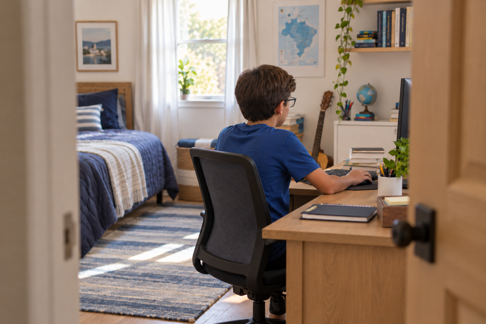
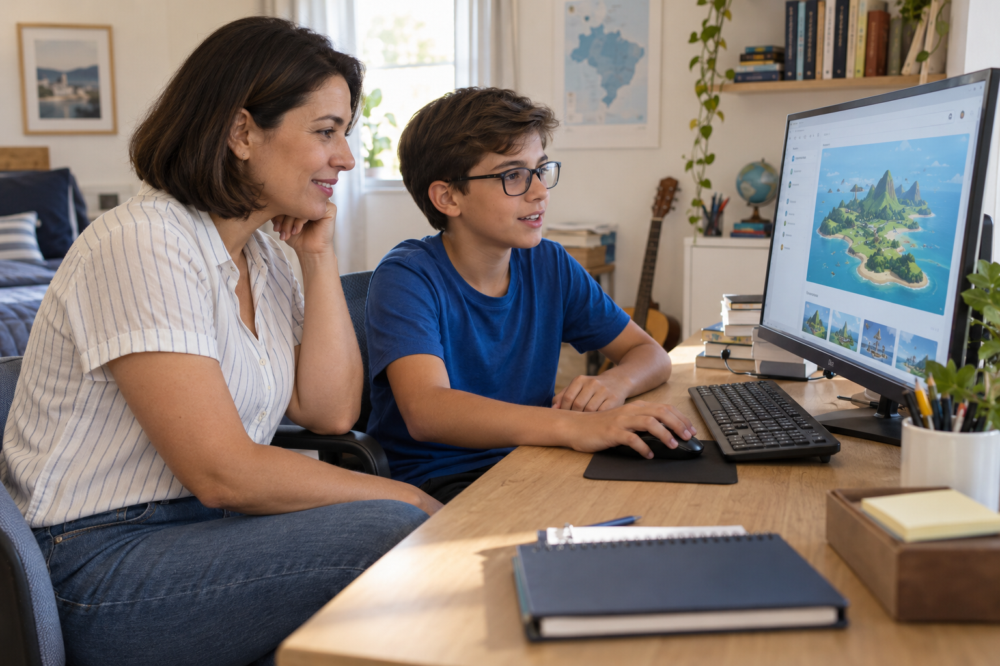
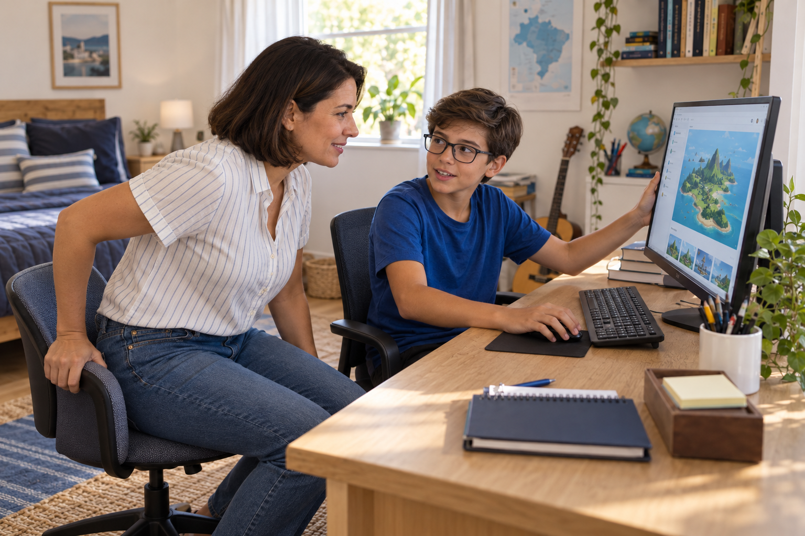
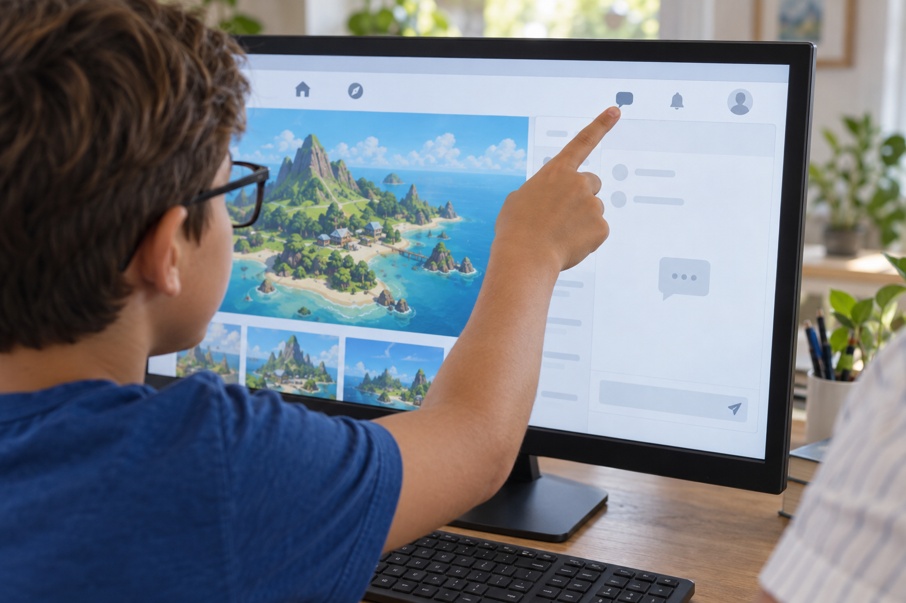
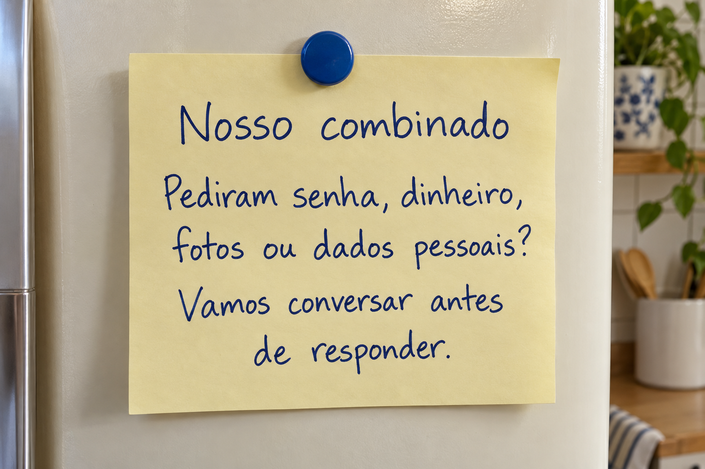
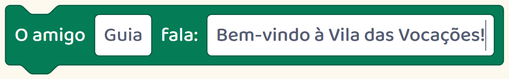

Teste em casa
Da porta, você vê as costas dele e o monitor por trás.
Para saber o que acontece na tela, chegue mais perto.

Da porta, você vê as costas dele e o monitor por trás.
Para saber o que acontece na tela, chegue mais perto.

Reserve um momento para sentar ao lado do seu filho.

Peça: “Me mostra o que você gosta de fazer aqui.”
Deixe ele mostrar e explicar.

Você consegue ver o aplicativo, o jogo e as conversas que uma olhada rápida da porta não mostra.
Durante a conversa, pergunte:

Como isso funciona?
Em qual site ou aplicativo você está?
Quem consegue falar com você aqui?
Combinem que pedidos de senha, dinheiro, fotos ou dados pessoais devem passar por você.

Seu filho pode chamar você antes de responder.
Criar jogos também permite conversar sobre quem escreve o que aparece na tela.

Ao montar um diálogo, a criança escolhe a fala do personagem.
Nesta vila que montamos, a pergunta da personagem foi escrita pela nossa equipe.
É uma fala programada. Uma conversa com outra pessoa funciona de outro jeito.
Ajudem seu filho a perceber quando está lendo uma fala do jogo e quando alguém está falando com ele.
Siga @criecomhelenaejulio para acompanhar mais de perto suas atividades com tecnologia.